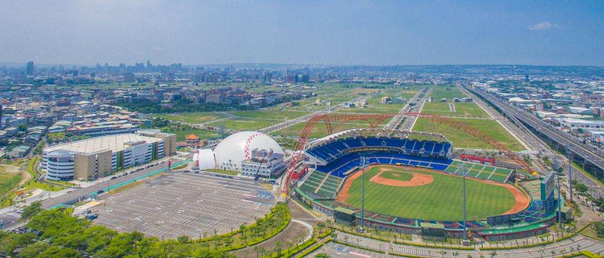

關於台中球場
臺中市洲際棒球場(簡稱洲際棒球場或洲際)，位於崇德路及環中路口，於2006年完工，是臺灣地區首屈一指符合國際標準的棒球場，也是國內首座以美式風格為架構的棒球場，看台視野廣闊，周邊腹地廣大，球場上方以棒球縫線為造型的景觀設計，更象徵洲際棒球場的地標性。是臺灣舉辦國際級棒球賽事之主要場地之一，已有多次國際級大賽在此舉辦。
目前由午資開發股份有限公司負責臺中洲際棒球場以及周邊園區的維護管理，為響應政府全力推動及發揚國球（棒球）運動計畫，增資投入進行全面改善比賽場地及各類設施妥善維護、改善，強化各級棒球運動的推廣及教育，積極配合各棒球團體舉辦各項比賽及夏令營等活動，戮力達成球場整體營運目標，提升國球的深度與廣度，培養棒球欣賞禮儀，讓觀賞棒球活動能更加普及，讓民眾可以更加親近球場，成為主要的休閒生活之一，並期待開發園區周邊建設及結合文藝活動，以增進國民休閒及運動兼具概念，既可行銷臺中城市之美，又落實午資開發對社會責任的自我堅持，且善盡回饋鄉土的企業使命，為棒球盡我們最大的心力！
豹子腿球場開箱